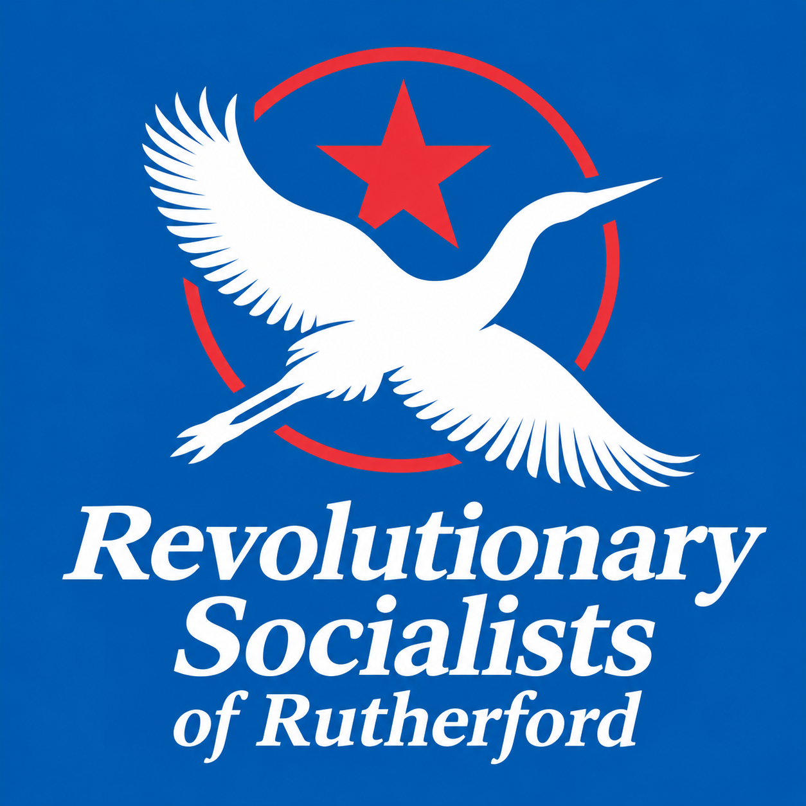
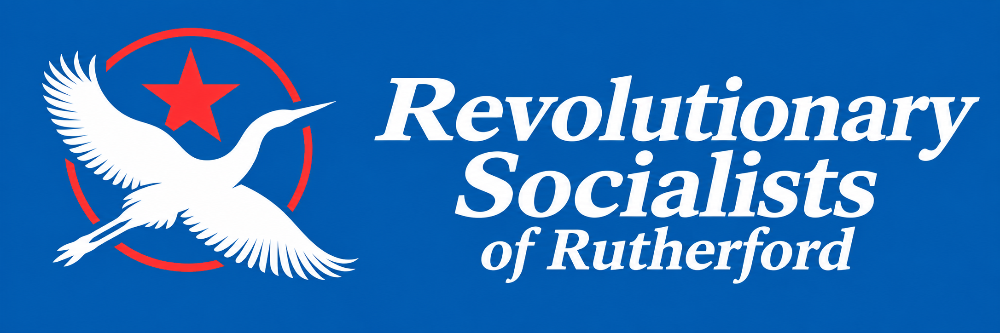

Political Party Leader / Candidate
William Goodhue
William provides the overall political direction for the group and acts as the main public-facing representative of the movement.

Revolutionary Socialists of Rutherford
Rutherford College political group

Leadership
William provides the overall political direction for the group and acts as the main public-facing representative of the movement.
Braedyn helps structure the group’s planning, strategy, and coordination to keep the broader mission organized and moving forward.
Manu focuses on messaging, visibility, and presenting the group to the public in a clear and attention-grabbing way.
Duties are subject to change in the near future.